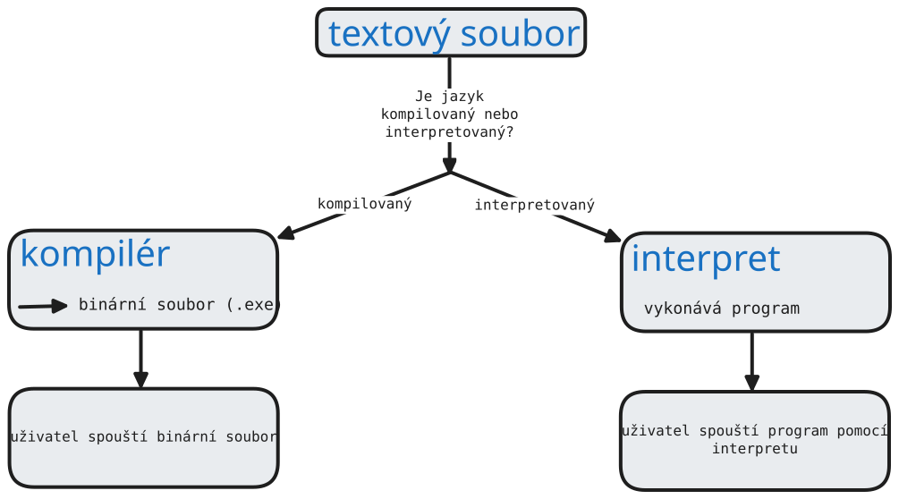

print("Ahoj světe!")Počítač rozumí pouze strojovému kódu (binární kód – jedničky a nuly).
My ale píšeme programy v programovacích jazycích (Python, C++, Java...), které jsou pro člověka čitelnější.
Odpověď: Musíme ho přeložit nebo interpretovat!
Kompilátor = program, který přeloží celý zdrojový kód najednou do strojového kódu.
Proces kompilace:
Zdrojový kód (např. C++) → Kompilátor → Spustitelný soubor (.exe)
Interpret = program, který čte a vykonává kód řádek po řádku, bez předchozího překladu.
Proces interpretace:
Zdrojový kód (např. Python) → Interpret → Přímé vykonání
| Kompilátor | Interpret | |
|---|---|---|
| Rychlost běhu | ✓ Rychlejší | ✗ Pomalejší |
| Vývoj a testování | ✗ Pomalejší (musí se kompilovat) | ✓ Rychlejší (okamžitá zpětná vazba) |
| Ladění chyb | ✗ Složitější | ✓ Jednodušší |
| Přenositelnost | ✗ Musí se překompilovat pro každý systém | ✓ Stejný kód funguje všude |
Zkuste vymyslet další výhody a nevýhody každého přístupu!
Tradičně první program v jakémkoliv jazyce jen vypíše text "Hello World".
print("Hello World!")
print("Hello World!")print() je funkce, která vypíše text na obrazovku.
print("Ahoj!")print("Mám rád programování")print("Python je snadný")
print(42)Proměnná = pojmenované místo v paměti, kam můžeme uložit hodnotu.
jmeno = "Petr"vek = 15print(jmeno)print(vek)
vek ≠ Vek)vek je lepší než x)
cislo = 42 # celé číslo (int)pi = 3.14 # desetinné číslo (float)
jmeno = "Anna"zprava = 'Ahoj světe!'
vysledek = 5 + 3 # sčítánípozdrav = "Ahoj " + "světe" # spojování textu
Vytvořte proměnné s vaším jménem a věkem a vypište je pomocí print()!
Algoritmus = přesný postup (návod), jak vyřešit daný problém.
Napište přesný postup (algoritmus) pro:
V následujícím "algoritmu" na výměnu dvou proměnných najděte chybu:
a = 5b = 10a = b # Co se stane? Ztratíme původní hodnotu a!b = a
input()if[] a forinput() = funkce, která umožňuje uživateli zadat data do programu.
jmeno = input("Jak se jmenujes? ")print("Ahoj, " + jmeno + "!")
input() vždy vrací text (string)!
vek = input("Kolik je ti let? ")vek = int(vek) # převod na celé čísloprint("Za rok ti bude: " + str(vek + 1))
int() = převede text na celé číslo
str() = převede číslo na text
Napište program, který:
cislo1 = input("Zadej první číslo: ")cislo2 = input("Zadej druhé číslo: ")cislo1 = int(cislo1)cislo2 = int(cislo2)soucet = cislo1 + cislo2print("Součet je: " + str(soucet))
int(), Python spojí texty místo sčítání!
Podmínky umožňují programu rozhodovat se podle situace.
vek = int(input("Kolik je ti let? "))if vek >= 18: print("Jsi plnoletý!")else: print("Nejsi ještě plnoletý.")
: na konci if a else== – rovná se!= – nerovná se< – menší než> – větší než<= – menší nebo rovno>= – větší nebo rovnoNapište program, který:
vek = int(input("Kolik je ti let? "))if vek >= 18: print("Můžeš řídit auto")elif vek >= 15: print("Můžeš řídit moped")else: print("Ještě nemůžeš řídit")
Seznam = datová struktura pro uložení více hodnot pod jedním názvem.
znamky = [1, 2, 1, 3, 2]jmena = ["Anna", "Petr", "Jana"]mix = [1, "ahoj", 3.14, True] # může obsahovat různé typy
znamky = [1, 2, 1, 3, 2]print(znamky[0]) # vypíše: 1 (první prvek má index 0!)print(znamky[2]) # vypíše: 1print(znamky[-1]) # vypíše: 2 (poslední prvek)
len(seznam) – délka seznamuseznam.append(hodnota) – přidání prvku na konecmax(seznam) – největší hodnotamin(seznam) – nejmenší hodnotaFor cyklus = opakování příkazů pro každý prvek seznamu.
znamky = [1, 2, 1, 3, 2]for znamka in znamky: print(znamka)
Tento program vypíše každou známku na samostatný řádek.
jmena = ["Anna", "Petr", "Jana"]for jmeno in jmena: print("Ahoj, " + jmeno + "!")
znamka, jmeno) si můžete zvolit sami!
Napište program, který:
[1, 2, 3, 1, 2, 4, 1, 3]znamky = [1, 2, 3, 1, 2, 4, 1, 3]nejlepsi = min(znamky)nejhorsi = max(znamky)print("Nejlepší známka: " + str(nejlepsi))print("Nejhorší známka: " + str(nejhorsi))# Bonus - průměr:soucet = sum(znamky)prumer = soucet / len(znamky)print("Průměr: " + str(prumer))
input()
if?
Děkuji za pozornost!
input())if)for)Domácí úkol: Experimentujte s programy, které jsme dnes napsali!